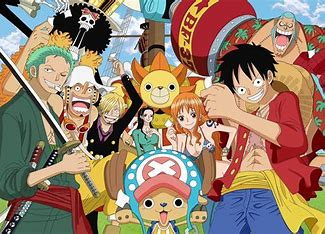
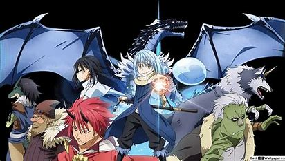
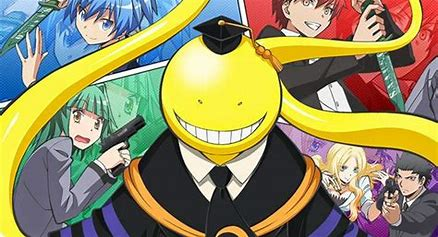
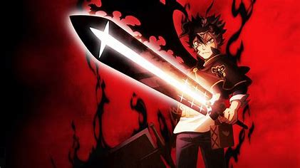

Lets Explore the world of Anime
One Piece
Lets find out.....
TITLE: One Piece
EPISODE: ongoing
COUNTRY: Japan
AUTHOR: Eiichiro Oda
AIRING DATE:1999
ENDED DATE: Ongoing
Plot Summary
One Piece is a story about Monkey D. Luffy, who wants to become a sea-robber. In a world mystical, there have a mystical fruit whom eat will have a special power but also have greatest weakness. Monkey ate Gum-Gum Fruit which gave him a strange power but he can NEVER swim. And this weakness made his dream become a sea – robber to find ultimate treasure is difficult. One Piece is a story about Monkey D. Luffy, who wants to become a sea-robber. In a world mystical, there have a mystical fruit whom eat will have a special power but also have greatest weakness. Monkey ate Gum-Gum Fruit which gave him a strange power but he can NEVER swim. And this weakness made his dream become a sea – robber to find ultimate treasure is difficult. But along his ways, he meet himself many members to help. Together, they sail the Seven Seas of adventure in search of the elusive treasure “One Piece.”
Click the link below to watch the video
Tensei Shitara Slime Datta Ken
Lets find out.....
TITLE: Tensei Shitara Slime Datta Ken
EPISODE: 24
COUNTRY: Japan
AUTHOR: Fuse
AIRING DATE:2018
ENDED DATE: May 25, 2023
Plot Summary
"Rimuru Tempest" is the new name of a slime in a fantasy world taken by a former 37-year-old human Satou Mikami after he is killed by a passing robber. Broken free from ordinary, stale past life, his fresh adventure in a fantasy world as a slime monster with unique abilities begins.
Click the link below to watch the video
Visit tensei-shitara-slime-datta-ken/1.com

Lets find out.....
TITLE: Ansatsu Kyoushitsu
EPISODE: 22
COUNTRY: Japan
AUTHOR: Yusei Matsui
AIRING DATE: July 2, 2012
ENDED DATE: March 25, 2016
Plot Summary
A humorous and action-packed story about a class of misfits who are trying to kill their new teacher – an alien octopus with bizarre powers and super strength! The teacher has just destroyed the moon and is threatening to destroy the earth – unless his students can destroy him first. What makes things more complicated is that he's the best teacher they've ever had!
Click the link below to watch the video

Lets find out.....
TITLE: Black Clover
EPISODE: 170
COUNTRY: Japan
AUTHOR: Yūki Tabata
AIRING DATE: February 16, 2015
ENDED DATE: August 21, 2023
Plot Summary
Asta and Yuno were abandoned together at the same church and have been inseparable since. As children, they promised that they would compete against each other to see who would become the next Emperor Magus. However, as they grew up, some differences between them became plain. Yuno was a genius with magic, with amazing power and control, while Asta could not use magic at all, and tried to make up for his lack by training physically. When they received their Grimoires at age 15, Yuno got a spectacular book with a four-leaf clover (most people receive a three-leaf-clover), while Asta received nothing at all. However, when Yuno was threatened, the truth about Asta's power was revealed, he received a five-leaf clover Grimoire, a "black clover"! Now the two friends are heading out in the world, both seeking the same goal!
Click the link below to watch the video

Lets find out.....
TITLE: Jujutsu Kaisen
EPISODE: ongoing
COUNTRY: Japan
AUTHOR: Hiroshi Seko
AIRING DATE:October 3, 2020
ENDED DATE: Ongoing
In a world where demons feed on unsuspecting humans, fragments of the legendary and feared demon Ryoumen Sukuna were lost and scattered about. Should any demon consume Sukuna's body parts, the power they gain could destroy the world as we know it. Fortunately, there exists a mysterious school of Jujutsu Sorcerers who exist to protect the precarious existence of the living from the undead! Yuuji Itadori is high schooler who spends his days visiting his bedridden grandfather. Although he looks like your average teenager, his immense physical strength is something to behold! Every sports club wants him to join, but Itadori would rather hang out with the school outcasts in the Occult Club. One day, the club manages to get their hands on a sealed cursed object, but little do they know the terror they'll unleash when they break the seal...
Click the link below to watch the video